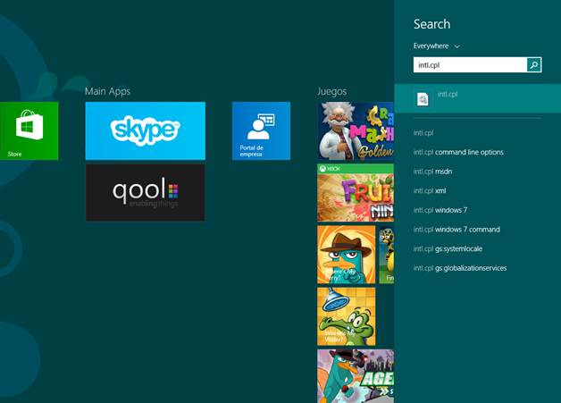
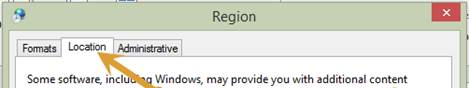
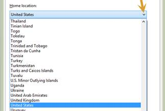

Como ver las apps disponibles para otros paises
En el panel de búsqueda ingresar intl.cpl
Ejecutarlo, en la ventana que se abre ir a la pestaña Ubicación (location si lo tienen en inglés)
Seguidamente seleccionar el pais de las Apps (en este caso Colombia)
Aceptar los cambios, reiniciar la sesión (en Windows 8.1 no hay que reiniciar sesión)